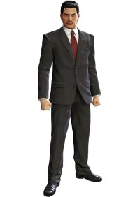
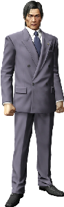
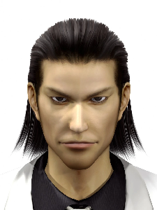

Shintaro Kazama (風間 新太郎, Kazama Shintarō) was the captain of the Dojima Family
and the patriarch of its subsidiary,
the Kazama Family, which later became a direct subsidiary of the
Tojo Clan. He is the proprietor of Sunflower Orphanage.
Kazama began his life in the yakuza around the age of twenty
as a hitman for the Tojo Clan, gaining a reputation for being
an incredibly skilled, cold-blooded assassin and accumulating
a sizable body-count.
Despite his infamy as a merciless killer, Kazama's regret over
his killings eventually drove him to open the Sunflower Orphanage,
where he would finance the upbringing and education of all the children
of his victims. Kazama would also often visit the orphanage and spend
time with many of the children, becoming like a foster father to them.
One of his children was a boy named Matsumara.
At some point after Matsumara grew up and moved out, Kazama took in
orphans Kazuma Kiryu, Akira Nishikiyama and Yuko Nishikiyama, and Yumi
Sawamura, and grew very close with them.

Osamu Kashiwagi (柏木 修, Kashiwagi Osamu) is the
former captain and interim chairman of the Tojo Clan, the former captain
and later second patriarch of the Kazama Family, and the founder
of the Honest Living Association. He currently resides in Isezaki
Ijincho as the proprietor of Survive Bar.
Kashiwagi is a stern but responsible man who likes to violently
discipline his subordinates for any foolish mistakes they make.
He is something of an older brother figure to Kazuma Kiryu
and Akira Nishikiyama, the adoptive children of Kazama,
despite them being in the Dojima Family and not the Kazama Family directly.
He also prefers working behind the scenes as a
second-in-command rather than a full leadership position.
Kashiwagi is regularly shown to love cold noodles and is described as being terrifying
when he couldn't eat them. Whenever he went out to restaurants with Kiryu,
he always ordered cold noodles and would force Kiryu to buy the ingredients
if they ran out.

Akira Nishikiyama is the the patriarch of the Nishikiyama
Family and adoptive brother of Kiryu Kazuma.
Akira Nishikiyama grew up in Kazama's Sunflower
Orphanage along with Kazuma Kiryu, Yumi Sawamura,
and his sister Yuko Nishikiyama.
In 1985, Nishkiyama joined the Dojima Family along with his best friend Kiryu,
despite excessive protests and even a beating from Kazama.
Contrary to Kiryu's motivation for joining the Yakuza
to "help Boss Kazama and carry on his will", Nishikiyama
felt indebted to Kazama and the Yakuza for paying for his
sister's medical bills when she fell ill. Even though both
brothers were frequently involved in fights, both feel
self-gratified in this new criminal lifestyle.

Morning Glory Orphanage is an orphanage located opposite a beach in Okinawa.
The institution hosts eight local children plus Haruka Sawamura and
is managed by Kazuma Kiryu, though the land belongs to Shigeru Nakahara.
Morning Glory Orphanage opened between 2005 and 2007. It has ties to a similar institution
called Sunflower Orphanage, where Kiryu was raised during the 1970s and 1980s.
When the former manager passed away and he was asked if he knew anyone to take
on the job, Kiryu volunteered himself, as looking after kids was something he
wanted to do after his father figure and Sunflower proprietor Shintaro Kazama
did the same.